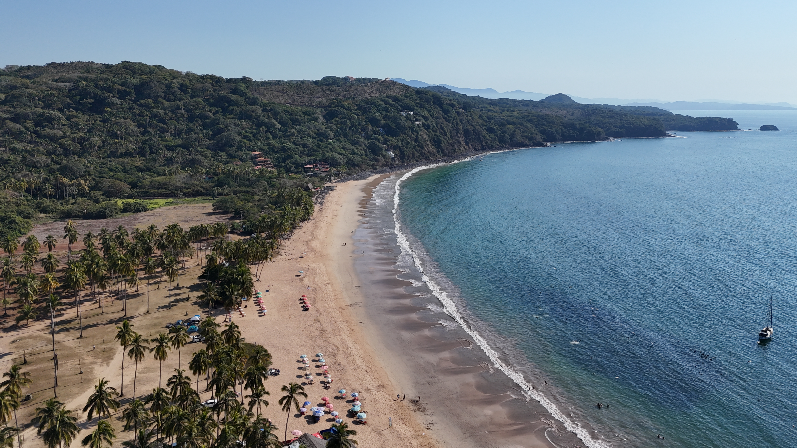

Playa Chacala
Playa principal del pueblo de Chacala. Es una bahía amplia de arena clara, oleaje suave y aguas tranquilas, ideal para nadar, familias con niños y adultos mayores. Cuenta con restaurantes, palapas, renta de lanchas y un ambiente relajado.